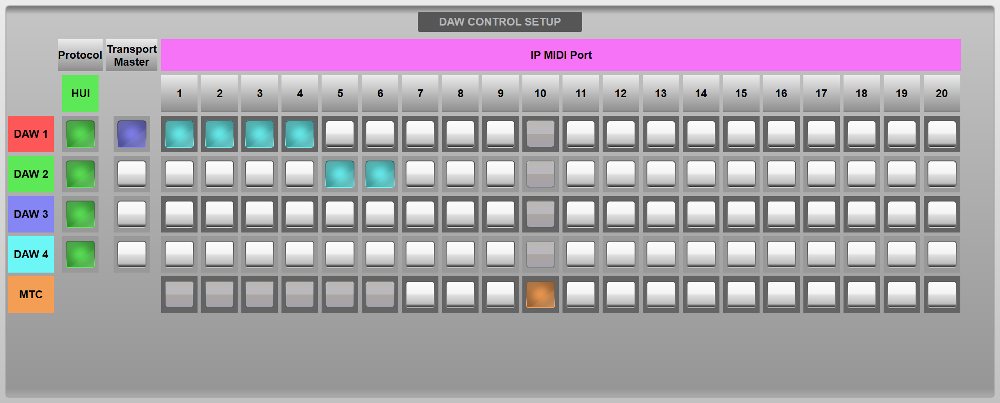
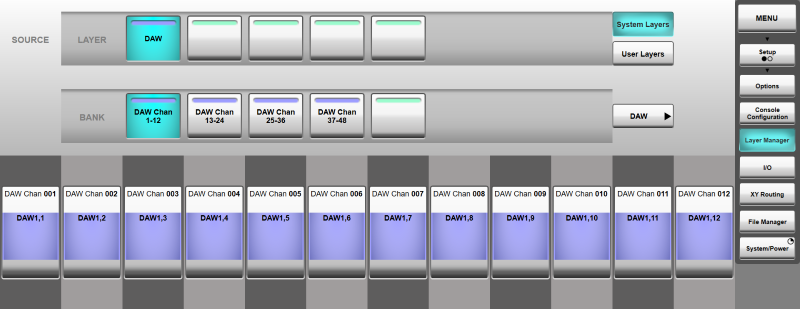
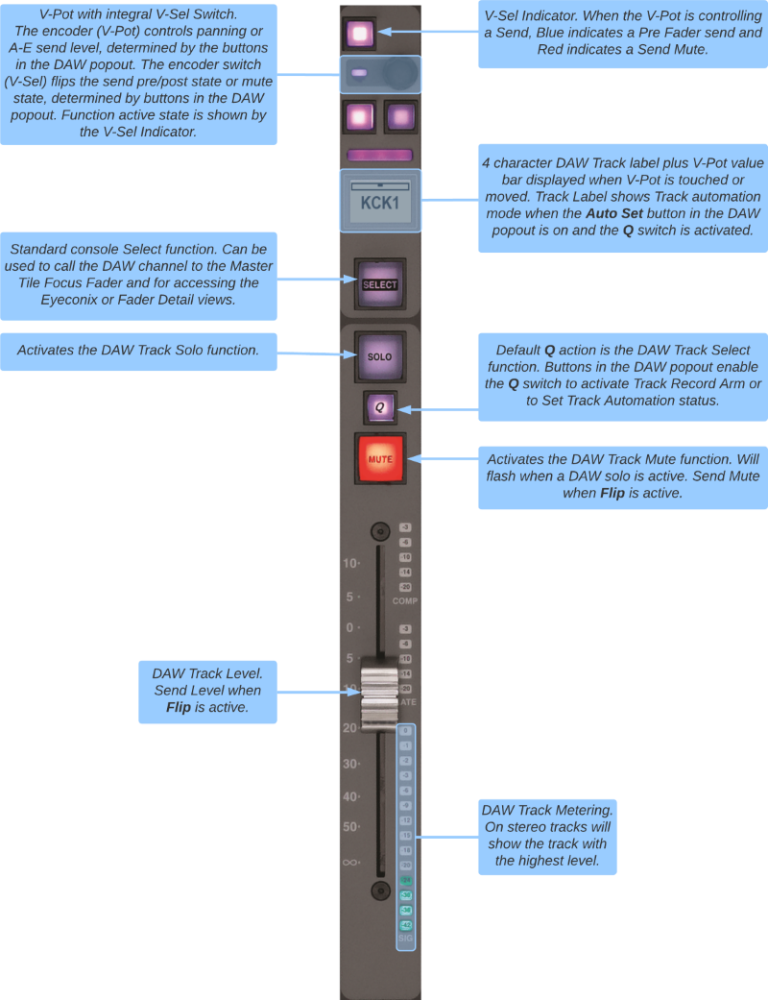
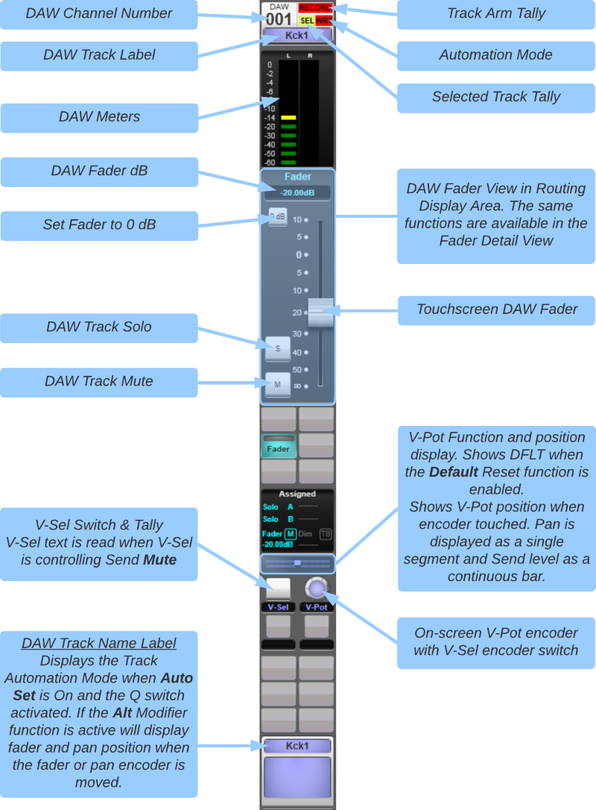
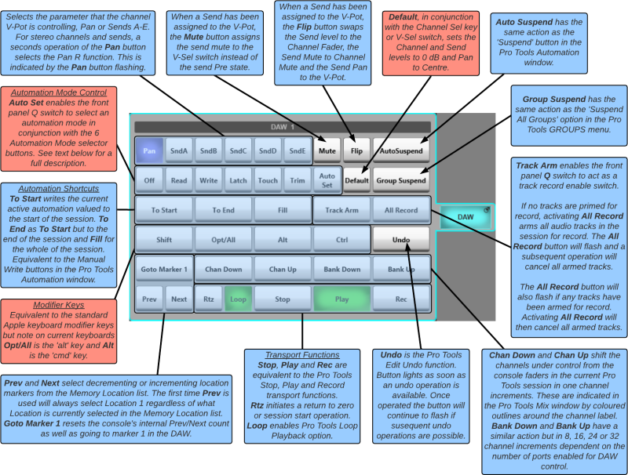
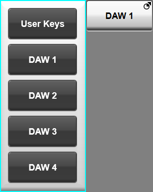
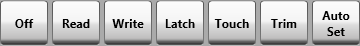

DAW Control
SSL Live software supports DAW control via the HUI™ protocol. This is primarily for integrating with Pro Tools but is a control option with some other DAW software. 8, 16, 24 or 32 DAW controller channels can be configured for up to 4 separate DAWs. Connection is via the Connectivity Network port using ipMIDI as on other SSL DAW control products.
DAW Control Basics
The HUI protocol was originally developed to control Pro Tools from dedicated control surfaces built by Mackie. All DAW functions described below refer specifically to Pro Tools operation and use the label names of the hardware control functions that the SSL Live DAW control software emulates.
Note: There are other DAWs that can be controlled via the HUI protocol, however most of them do not map the HUI control messages directly to equivalent functions. Solid State Logic has extensively tested our HUI implementation with Pro Tools on both Mac and PC platforms but unfortunately is not able to offer support for DAWs other than Pro Tools when using SSL Live's DAW control in the event that issues arise in their use of the HUI protocol.DAW control can be configured in banks of 8 consecutive channels with a maximum of four banks providing 32 physical console faders for DAW Control for each DAW. As there are both channel scrolling and banking keys there is no limit to the number of tracks in a Pro Tools session that can be accessed, as the tracks can be scrolled or banked on to the console faders as required. Pro Tools Memory Locations can also be used to recall specific track layouts.
DAW control is via the SSL Live Fader Tiles with the controls mapped to the DAW mixer functions instead of the console's internal processing. The faders control DAW track level and the encoders control track panning and send levels. A Flip function allows the faders to control send levels. Track arming and automation modes can be set via the Q switch.
When using SSL Live as the control surface for a Pro Tools mix session, two solutions are recommended. When Pro Tools is being used as a playback source together with other live audio sources, a single HUI port setup provides 8 DAW control paths on the surface, which are banked in 8 track increments like other 8-fader controllers. These DAW control paths can be combined with audio paths on the console surface for a hybrid workflow. Alternatively, configuring a 24 fader surface (three HUI ports) over two Fader Tiles and banking in 24 track increments is typically the most favourable solution to minimise banking if DAW control is the console's primary application.
A DAW popout in the Channel View screen contains groups of buttons to assign the encoder function and set up track automation modes. It also offers transport control, plus channel scrolling and banking buttons and other useful master functions. These are explained in detail below. All of these functions, together with additional commands available in the HUI protocol, can be mapped to User Keys.
Main Controller Features
The following functions in Pro Tools can be controlled via dedicated front panel controls or touch screen access on the control surface:
-
Track
- Level
- Mute
- Solo
- Stereo Pan
- Track Arm
- Automation Mode
- Sends A-E Level, Pre/Post, Mute and Stereo Pan
- Fader to 0 dB
- Stereo Meters*
- Channel Label
- Select
-
Session Track Navigation
- Channel Up/Down
- Bank Up/Down
-
Automation
- Automation Suspend
- Fill to Start, End, Mix
-
Timeline
- Stop, Play, Record
- Return to Zero (RTZ)
- Loop
- Next Marker, Previous Marker
- Goto Marker 1
-
General Functions
- All Record
- Group Suspend
- Sends to Fader (Flip)
- Modifier keys: Shift, Opt/All, Alt and Ctrl
Additional control functions are available as User Keys and Events together with the Master functions listed above.
Configuring ipMIDI
Please refer to the ipMIDI section for instructions on configuring ipMIDI on the DAW host machine.
DAW Control Setup
Select the ipMIDI ports to be used with each connected DAW via the DAW tab of the Setup > Options page. A maximum of four ports per DAW is possible in Pro Tools via HUI (up to 32 DAW control faders). Ports need not be consecutive but the lowest port will always be DAW channels 1-8.
It is recommended that the Pro Tools host computer is booted after the ipMIDI ports have been selected on the console, or rebooted if already running.

Master transport keys are assignable to User Keys and Events. These will control whichever DAW has the Transport Master option selected in the setup page.
MTC (MIDI Timecode) source selection is also configured in this page. Use of MTC is described in the Timecode options section.
Note: If using ipMIDI for DAW Control this should be a different ipMIDI port to that used for Automation Input/Output Actions, Events and Timecode.Configuring DAW Banks
Once the DAW ports have been enabled in the DAW Control Setup page, the DAW controller channels will be visible in the DAW Source Layer in the Layer Manager. Channels can then be placed in User Banks as required. Note that the DAW Channel Label shows the number of the DAW port as well as the channel number. Once connection to a Pro Tools system is established this will be replaced by the four character Pro Tools track label received from the DAW.

Note that DAW channels are not currently supported in TaCo.
Fader Tile Control

DAW Channel Strip

DAW Popout
The DAW popout is accessed via the sidebar on the right of the Channel View page. Press the DAW button to open the main popout. A detailed overview of the functions controlled from the popout can be found below.

Press & hold the DAW button to select which DAW is being controlled from the popout. (If the popout has previously been used for User Keys then the sidebar button will be labelled User Keys.)

DAW Pop-Out Button Modes
Standard touch button operation is 'one shot', i.e. when the button is released the indicated function is actioned. Button descriptions highlighted in red above operate in a different manner:
The Modifier Keys
These keys have a latching action so that they can be used in conjunction with other DAW functions. The first operation of the button latches the function on, and a subsequent operation cancels the function.
Automation Mode Control

Auto Set is a toggle function which changes the function of the front panel Q switch to select automation modes in conjunction with the 6 automation mode buttons: Off, Read, Write, Latch, Touch, and Trim (Pro Tools HD only).
Two modes of operation are possible:
- Hold down the Fader strip Q switch then select the required automation mode using the touch screen button. It will function in 'one shot' mode.
- Push and hold an automation mode button and it will latch on. Multiple channels can then be selected to the latched mode via their Q switches. Touch the mode button again to unlatch.
In conjunction with the Modifier Keys, multiple tracks can be set to a specific automation mode:
- Opt/All + Auto Mode sets all tracks to the selected mode.
- Shift + Opt/All + Auto Mode sets all selected tracks (tip: use the Q key + Alt to select multiple non contiguous tracks) to an auto mode.